SplatThis · project archive
Ten months of fitting 2D Gaussians to a photograph, told through fourteen renders that survived. Everything else — 187 scratch files, 112 MB of one-off comparison pages — has been binned. These are the frames where something actually changed.
Sept 2025
A splat renderer that drew, then a splat renderer that fit a photo — badly. Everything here is the retired splat_this pipeline learning what the primitive could and couldn't do.
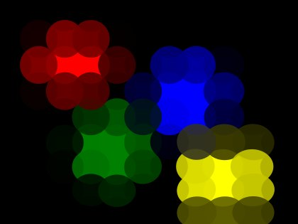
Four splats on blackopen svg · 20 KB
The first thing the renderer ever produced: a handful of isotropic Gaussians, flat-coloured, composited over an empty black canvas. No image fitting yet — just proof the primitive drew.
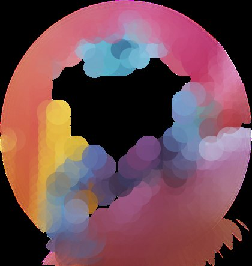
The hole in the middleopen svg · 130 KB
First real photo fit. Splats clustered on high-gradient detail and left the smooth centre of the subject completely uncovered — the black is canvas showing through, not paint.
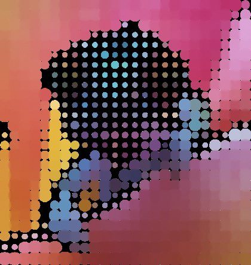
Halftone collapse
Size-varied placement without overlap control: splats landed on a near-regular lattice and the gaps between them read as a printed dot screen.
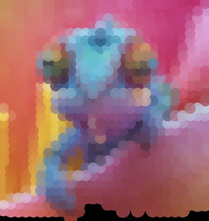
First full frameopen svg · 105 KB
Depth/spacing rework: the subject and most of the frame finally get paint, though the bottom edge still drops to bare canvas. Soft and muddy, but for the first time the output is a picture rather than a scatter plot.
Sept 2025
The chameleon becomes the standing test image and the budget goes up 8×. It doesn't help. The background is black because nothing paints it — a coverage bug that no amount of density can outrun.
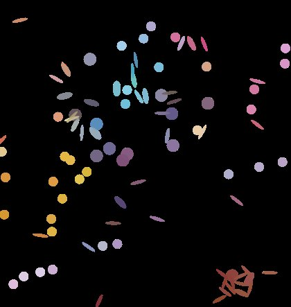
100 splatsopen svg · 16 KB
The chameleon becomes the standing test image. At 100 splats it is pure confetti — and critically, the background is still black.
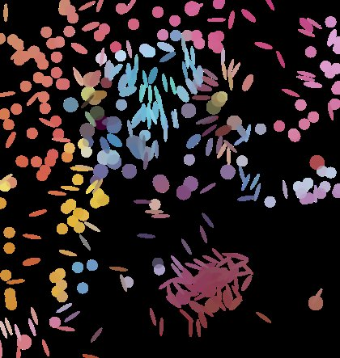
400 splatsopen svg · 65 KB
4× the budget. More confetti, denser clusters, same black ground.
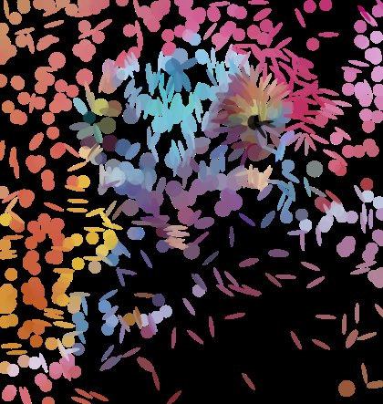
800 splatsopen svg · 130 KB
8× the budget and the picture is no closer to legible. The lesson that shaped everything after: coverage was the bug, not density. Throwing splats at it could never fix a missing background.
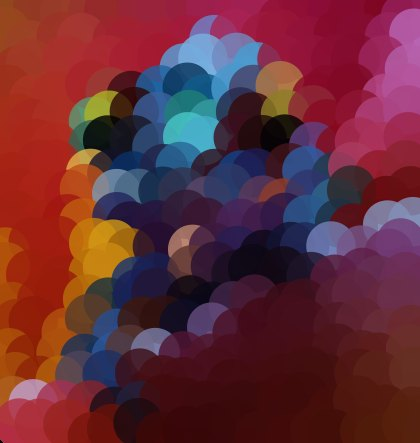
Uniform placementopen svg · 48 KB
Placement-strategy bake-off on a synthetic target. Uniform seeding spends budget evenly and blurs every edge.
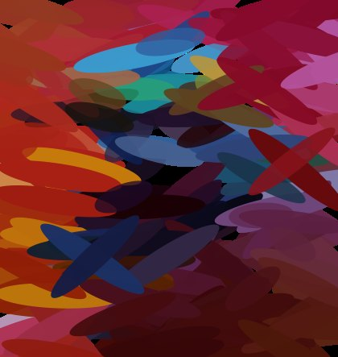
Structure-guided placementopen svg · 50 KB
Same budget, seeded from the structure tensor. Edges survive as oriented strokes — the ancestor of today's anisotropic init.
Feb 2026
png2splat rebuilds the pipeline and climbs the resolution ladder. Sharper, denser, and carrying the same structural hole as six months before.
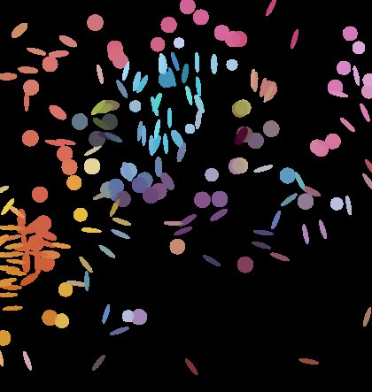
256pxopen svg · 34 KB
The png2splat rewrite. A resolution ladder to find where detail starts paying for itself — still splats-on-black.
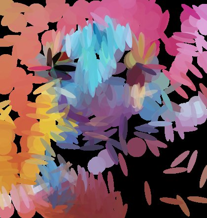
768pxopen svg · 101 KB
3× the resolution, far more splats, still no ground. Same structural gap as six months earlier, now at higher fidelity.
Feb–May 2026
An explicit background plate plus radial gradients that follow the renderer's real opacity curve. The moment the output stops being a scatter plot and starts being an image.
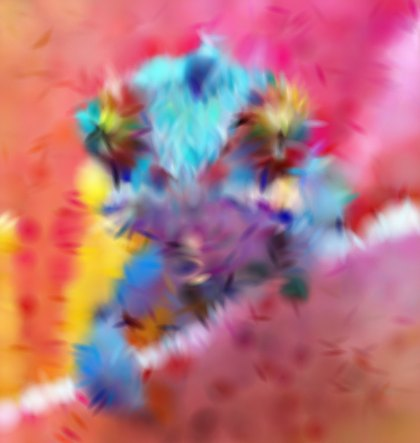
Background and true Gaussian falloff
The turn. An explicit background plate plus per-splat radial gradients following the renderer's real opacity curve, 1 − e−αG. The canvas is painted, the falloff is smooth, and the subject reads at a glance for the first time.
Jul 2026
Ten months in, with honest metrics, OKLab loss, an MLX backend and four SVG recipes shipping — the render was still speckled. The cause was three lines old: splats elongated across edges instead of along them.
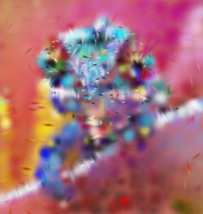
Before the orientation fix
July 2026, 2,000 splats, full modern pipeline — and still speckled. Two of four splat-creation sites fed the structure tensor's gradient direction straight in as the major axis, elongating splats across edges instead of along them. LPIPS 0.449.
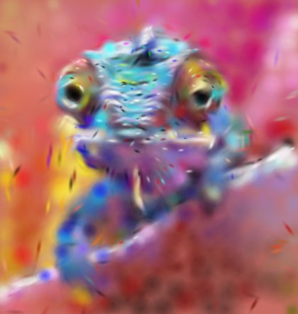
After the orientation fix
Identical seed and budget, one π/2 rotation applied at every creation site via features.edge_tangent_angle(). Eyes, casque and mouth resolve. LPIPS 0.415, SSIM(sRGB) 0.701.
The orientation fix is three lines: the structure tensor returns the gradient direction, which is perpendicular to the edge, and two of four splat-creation sites used it raw as the major axis. Because the default MLX path trains only colour and alpha, orientation could never correct itself during optimisation.
| Deployed SVG | Before | After | Δ |
|---|---|---|---|
| LPIPS ↓ | 0.4494 | 0.4151 | −0.0343 |
| SSIM (sRGB) ↑ | 0.678 | 0.701 | +0.023 |
| PSNR (sRGB) ↑ | 20.12 dB | 21.21 dB | +1.09 dB |
All four sites now share
features.edge_tangent_angle(), and a parity test pins the
convention so it cannot drift back.
{kind=link}
{kind=link}
{kind=link}
{kind=link}
{kind=link}
{kind=link}
{kind=link}
{kind=link}
{kind=link}
{kind=link}